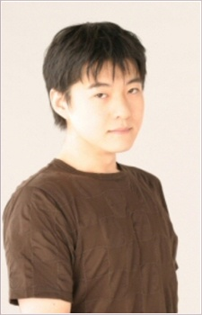
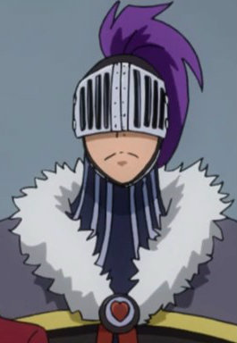

Yoshihisa Kawahara is a Japanese voice actor. He is affiliated with Across Entertainment.
- Gender: Male
- Birthday: June 22, 1976
- Hometown: Tokyo, Japan

| |
Yoshihisa Kawahara is a Japanese voice actor. He is affiliated with Across Entertainment.
|
 |
|---|
|  | Bickslow |
|
Bickslow is a memeber od the Guild Fairy Tail. He comes off as Creepy appearance. He controls them dolls called "babies." He has a tendency of laughing out loud maniacally. Bickslow's personality is carefree and lighted-hearted. |